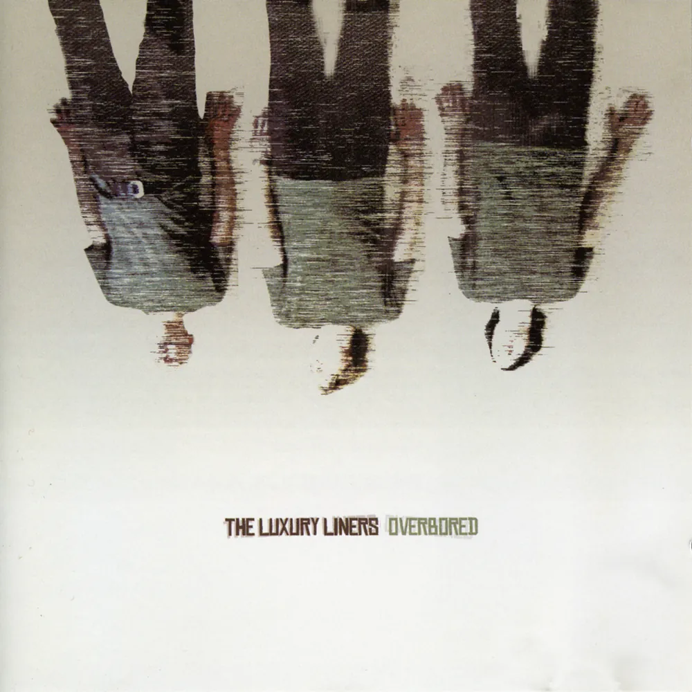
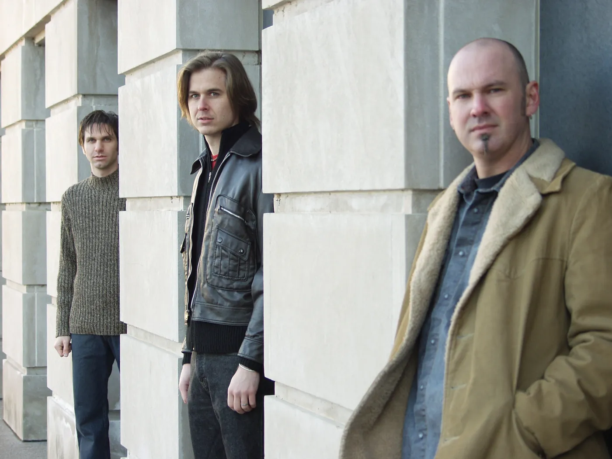

Album · 2003 · The trio’s first album
Overbored
- May 2003
- Litterbug Records
- LLCD1003
- 10 tracks
- 36:23
Overbored, the trio’s first album, came out in May 2003 on Litterbug Records. Doug Nightwine recorded it, Chris Henning mixed it, and Paul Seykora added keyboards. David wrote most of the songs, Larry wrote “Restless”, and David made the cover.
Tracks
- Sunshine3:05
The theme of FOX Sports’ US Youth Soccer Show.
- Restless3:41
- Dreaming4:39
Used in One Tree Hill, season 1, episode 15, “Suddenly Everything Has Changed”, first shown on The WB on February 24, 2004.
- Overbored4:12
- Waiting For The Sun3:24
- Woman3:48
- Equasue3:35
- Fifteen Again3:40
- It’s You3:24
- Constellation Invitation2:55
Credits
- David Dewese
- guitar, vocals
- David “Larry” Wilstermann
- bass
- Scott Carpenter
- drums
- Paul Seykora
- keyboards on “Dreaming” and “Woman”
- Recorded by
- Doug Nightwine
- Mixed by
- Chris Henning
- Cover art
- David Dewese

What they said
-
“‘Waiting for the Sun’ … is drop-dead perfect pop-rock (and the best song here) … This is one of my favorites of the year.”
Erik Hage, Metroland, June 2003
-
“The bittersweet trio of Woman, Equasue and Fifteen Again really push the album into the pantheon of tremendous local songwriting.”
Todd Anderson, Nashville Rage, October 2003
-
“Overbored … is a must-have for all power pop fans.”
Performing Songwriter, July 2004
The band’s one-sheet pitched it as “the perfect CD for traveling up the 5 from San Diego to L.A.”
“Equasue” on YouTube
Two of its songs went to television. “Dreaming” was used in One Tree Hill, and “Sunshine” became the theme of FOX Sports’ US Youth Soccer Show.
Chapter 6 of the Story tells how the album was made: read the chapter.
The trio in 2003